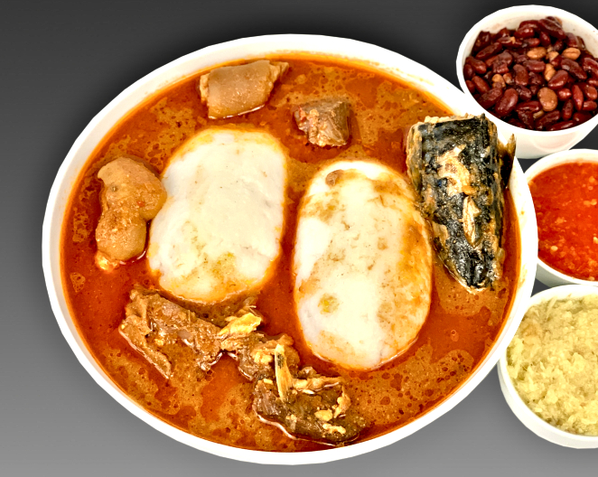

Rice Ball and Groundnut Soup

DESCRIPTION
A delectable blend of spices with a peanut-butter base that
can be served as a soup or a stew to your liking - modified with the level of stock
- the fluffy rice balls add texture while sponging up the exotic flavours.
INGREDIENTS
- 2 cups of rice
- 4 cups of water
- 1tbs salt
- 1tsp olive oil
- 1kg beef
- 1 big salmon(grilled)
- Some Crabs
- 1 Small ginger
- 1 Small garlic
- 2 onions
- 3 tbs of tomato paste
- 5tbs groundnut paste
- 1tbs pepper(powdered)
- Season powder
Back to home